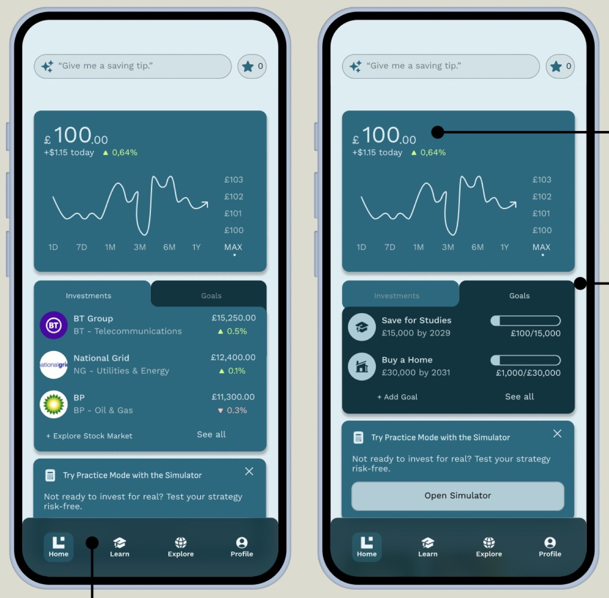
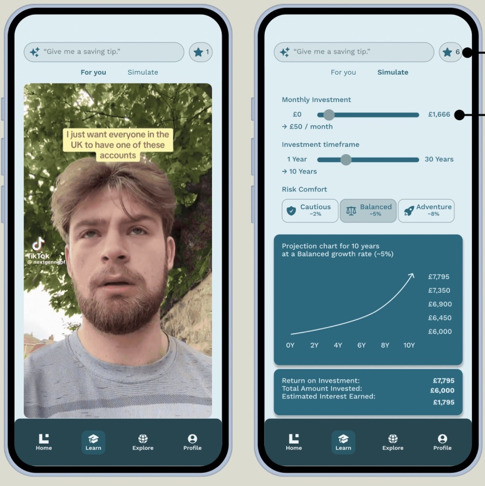
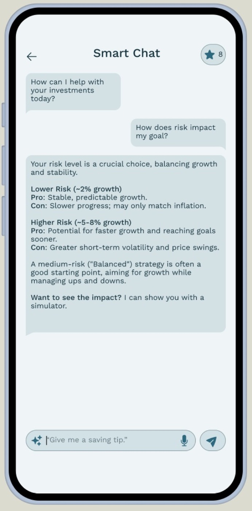
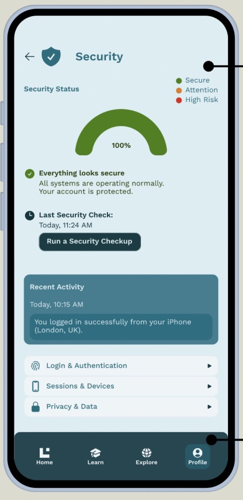
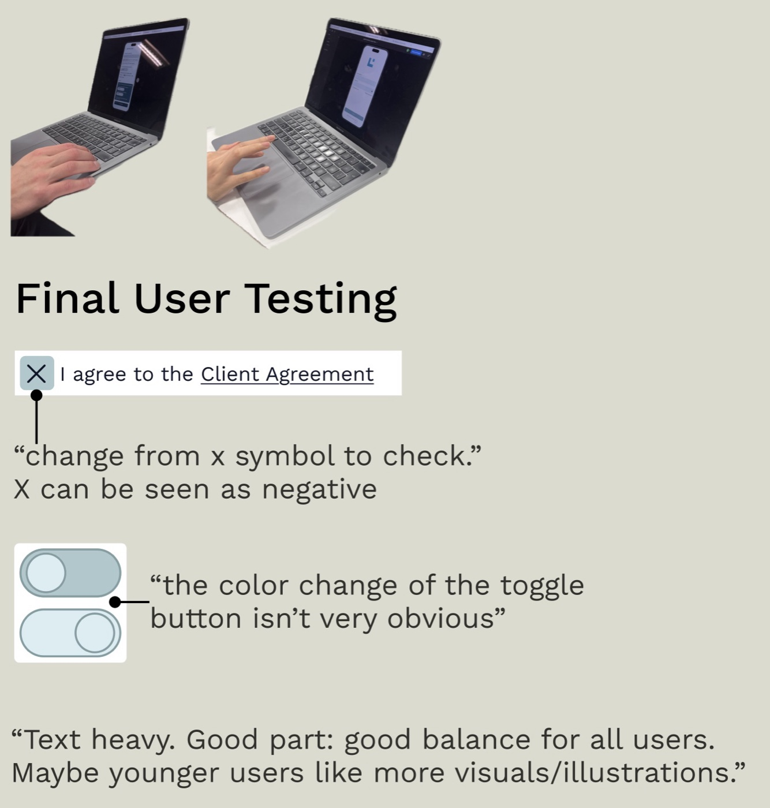
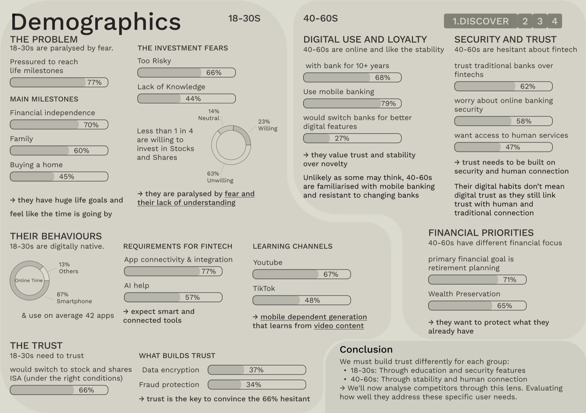
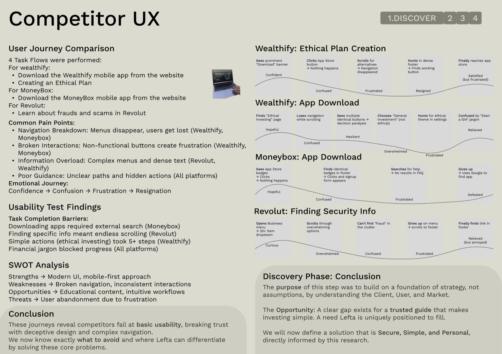
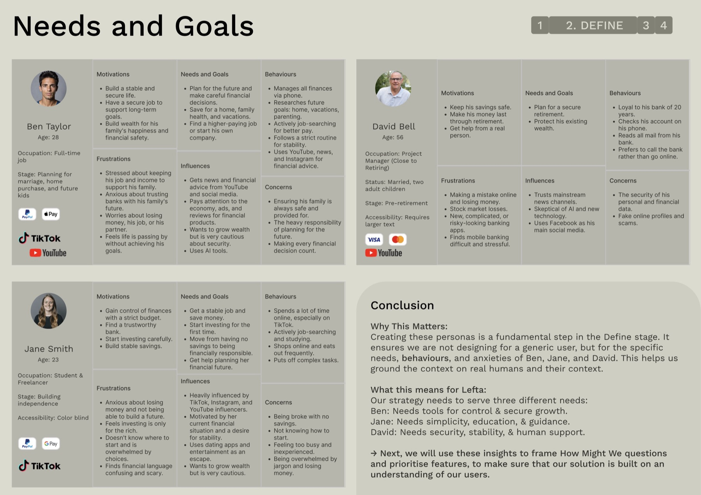
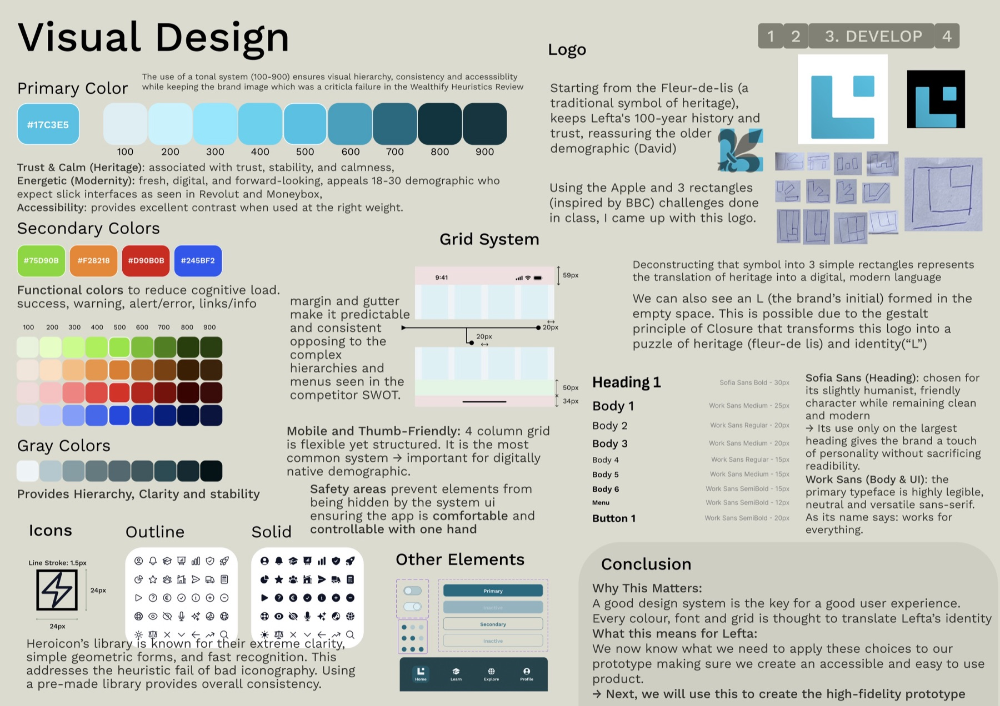

Lefta Wealth is a wealth management bank with over 100 years of heritage that has fallen behind online. For the UX Design Project of my MSc at Glasgow Caledonian University, I designed a Stocks & Shares ISA app that feels secure, simple and personal: attracting younger investors without alienating the loyal ones.
- UX Researcher & Designer (Solo Project)
- Led the full Double Diamond process: Discover, Define, Develop, Deliver.
- Designed the visual identity, design system and high-fidelity prototype.
- Ran user testing and iterated on the feedback.
- The insight: The problem isn't trust, but translation. Lefta needs to turn its trust and
expertise into a digital experience.
- 18-30s: Only 23% are willing to invest. 66% find it too risky and 44% feel they lack the
knowledge. They learn on YouTube and TikTok.
- 40-60s: 79% use mobile banking, but 62% still trust traditional banks over fintechs and
want access to a real person.
- Competitors: Heuristic evaluations and user journey maps of Wealthify, Moneybox and Revolut
revealed disappearing navigation, fake buttons and heavy financial jargon.
Designing for two very different audiences: young adults paralysed by fear of investing, and established clients who are sceptical of digital tools.
- Solution: Created three personas (Ben, Jane and David), 54 POVs and HMW questions, and
prioritised features with the Kano Model and MoSCoW.
- Solution: A guided onboarding that turns fears into simple choices and builds the user's
first personalised, goal-based plan.
- Solution: Plain language instead of jargon, TikTok-style learning, a risk-free simulator
and an AI smart chat.
- Solution: Visible trust through a security dashboard, accessibility settings and
confirmation steps for critical actions.
- Brand identity: A new logo that deconstructs Lefta's fleur-de-lis into three rectangles,
forming an "L": heritage translated into a modern language.
- Tested & refined: Low and high-fidelity prototypes were tested with users and improved
from their feedback.
- Key learning: UX design is more about translation than creating pretty screens: business
goals into user benefits, anxieties into successful interactions and brand values into visuals.
66%
of 18-30s see investing as too risky. Less than 1 in 4 are willing to invest.
79%
of 40-60s use mobile banking, but 62% still trust traditional banks over fintechs.
100+
years of heritage that Lefta needed to bring into a digital app without losing.
"The problem isn't trust, but translation."




The logo deconstructs a traditional fleur-de-lis into three simple rectangles: heritage translated into a modern language. The empty space forms an "L", for Lefta, through the Gestalt principle of closure.

Final testing surfaced small details that matter: an "X" on the agreement checkbox read as negative, and a toggle's colour change wasn't obvious enough. Testers found the balance of text worked for all ages, but younger users wanted more visuals.



